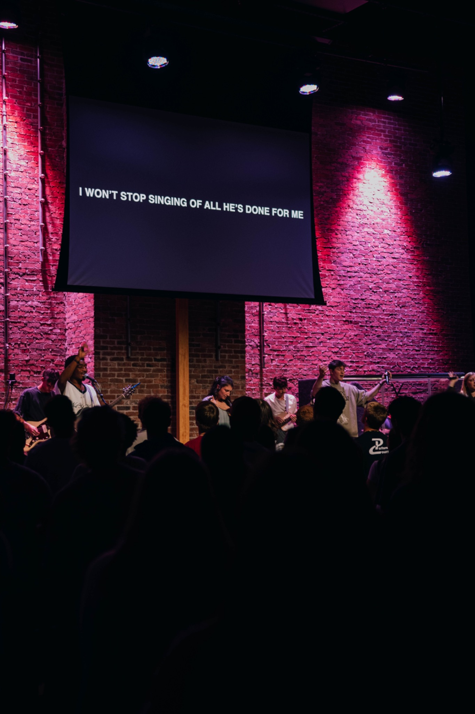

Church Leadership Resource Center
Build stronger ministry teams that last.
Practical training, team-building tools, and leadership resources for pastors, ministry leaders, and volunteers who want to lead people well.
The Purpose
A simple hub for real church leadership needs.
The Church Leader Training Hub is designed to help ministry teams become healthier, clearer, and more sustainable. Instead of overwhelming leaders with long essays, the site focuses on short training content, practical tools, and clear next steps that can be used in real ministry environments.
Leadership Growth
Develop young and emerging leaders with biblical and practical direction.
Learn the Philosophy
Volunteer Systems
Support volunteers through onboarding, communication, and retention systems.
View Tools